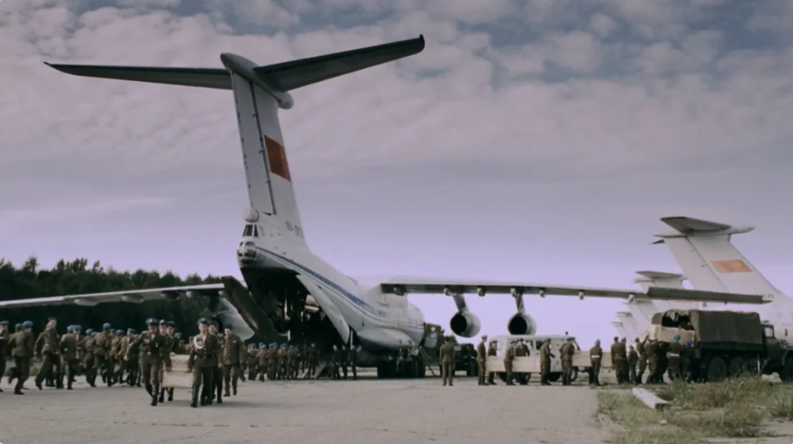

Сюжет
Действие фильма происходит в конце лета — начале осени 1984 года в вымышленных населённых пунктах
СССР — провинциальных городках Нижнем Волоке и Ленинске, посёлке Каляево, а также в Ленинграде.
Константин Черненко занимает пост генерального секретаря ЦК КПСС, идёт война в Афганистане.
Ленинградский профессор кафедры научного атеизма Артём Казаков по дороге к матери в Ленинск заезжает
к своему брату — Михаилу, в Нижний Волок, которому жалуется на нигилизм своего сына и его любовь к
«тусовкам». Он знакомится с фарцовщиком Валерой — молодым человеком своей племянницы Лизы.
Пара должна на следующий день ехать на отдых, на дачу, но Валера пытается уговорить Лизу пойти с ним
на позднюю дискотеку. Получив отказ, он отправляется туда один. На дискотеке Валера встречает
Анжелику, подругу Лизы, дочь секретаря райкома КПСС.
Тем временем у Артёма, едущего в Ленинск уже в темень, ломается автомобиль и он съезжает на обочину
в поисках помощи. Идя по просёлочной дороге, он встречает странного молчаливого человека в голубой
рубашке — как впоследствии окажется, местного капитана милиции Журова, который указывает пальцем на
дом позади себя — хутор Алексея — самогонщика, судимого за убийство. Попросив своего наёмного
работника, вьетнамца Суань Ван Хэя по прозвищу Сунька помочь с ремонтом машины, Алексей приглашает
Артёма к столу. Между ними завязывается спор о Боге, в котором Алексей высказывает идею о постройке
на своей земле Города Солнца. Сунька устраняет неисправности автомобиля. Подвыпивший Артём не
решается продолжать путь и вынужден вернуться к брату в Нижний Волок.
На хутор, за спиртом, приезжают Валера с Анжеликой. Валера уходит в дом и оставляет девушку одну в
машине. Анжелику примечает капитан Журов, он пристально разглядывает её сквозь стекло автомобиля и
уходит в темноту. Напуганная, она заходит в дом за Валерой и застаёт его сильно выпившим за столом с
так же пьяным Алексеем. Валера падает на пол без чувств, а нетрезвый, разгорячённый Алексей желает
заполучить девушку, из-за чего его супруга Антонина прячет Анжелику за печкой, потом в хлеву, в
конце концов, запирая в бане. Алексей засыпает за столом.
Журов, знакомый с Алексеем и наблюдавший за всем происходящим, велит Суньке отпереть баню. Зайдя,
они находят Анжелику с ружьём в руках, Капитан отнимает оружие и начинает домогаться до Анжелики.
Сунька требует оставить девушку в покое. Журов в ответ убивает вьетнамца.
Капитан насилует Анжелику горлышком водочной бутылки, лишая её девственности, после чего увозит
девушку на милицейском мотоцикле. По дороге капитан останавливается у телефона-автомата и сообщает
милиции о трупе на хуторе. Анжелика пытается запугать насильника отцом-партийной «шишкой» и
женихом-десантником, на что Журов никак не реагирует. Капитан привозит девушку к себе домой и
приковывает наручниками к изголовью кровати, оставляя под надзором своей матери-алкоголички —
выжившей из ума старухи, которая совершенно не воспринимает происходящее вокруг неё. Всё время она
проводит перед телевизором, где вперемешку показывают выступления эстрадных певцов и заседания ЦК
КПСС. Анжелику она принимает за невесту сына и заботливо предлагает ей пирожки и выпивку. Журов
объясняет ей, что девушка ему противится, так как до сих пор любит другого — жениха-десантника,
который служит в Афганистане.

Тем временем в Нижний Волок приходит известие о прибытии из Афганистана
груза 200 — семи цинковых гробов с телами военнослужащих, среди которых оказывается и сержант
Николай Горбунов, тот самый десантник и жених Анжелики. Брат Артёма Михаил, работающий местным
военкомом, находится в сильно возбуждённом состоянии из-за происходящих событий — пропажи молодого
человека своей дочери, пропажи её подруги, а также прибытии гроба с погибшим Горбуновым, которого он
знал ещё ребёнком. Приходит звонок из Ленинского военкомата — помочь с похоронами в связи с
нехваткой людей из-за летних отпусков. Разъярённый Михаил предлагает задействовать местную милицию.
Для захоронения сержанта Горбунова связываются с Журовым, который соглашается помочь. Вместе со
своими сослуживцами он едет на аэродром, где из транспортного самолёта Ил-76 Аэрофлота выгружают
гробы с погибшими. В этот же самолёт загружаются отряды десантников для отправки в Афганистан.
Милиционеры забирают гроб и отвозят на квартиру Журова, где он с коллегой вскрывает его, достаёт
тело Горбунова (посиневший труп одет в «дембельский» мундир и обут в кроссовки) и кладёт его рядом
со спящей Анжеликой. Та просыпается. Капитан сообщает девушке: «Жених приехал». Анжелика в ужасе
падает на пол и впадает в истерику.
В отделение милиции, где служит Журов, поступает вызов по поводу пьяного дебоша. Капитан, будучи во
главе милицейского наряда, приезжает по адресу, где стреляет в хозяина квартиры. Раненого забирают в
отделение, где помещают в "обезьянник". Тот продолжает хулиганить. В ответ милиционеры жестоко
избивают задержанного, после чего оформляют побег и отвозят его к Журову домой, где алкоголик
насилует девушку. Капитан молча наблюдает за процессом, затем убивает алкоголика из табельного
оружия и с грустью сообщает матери, что Анжелика по-прежнему не любит его.
По делу об убийстве вьетнамца задерживают хозяина хутора Алексея. Журов напоминает ему, что он у
него в долгу, и Алексей берёт вину на себя. Артём, наблюдавший за его арестом, решает разузнать о
деле у Антонины и встречает её у дверей прокуратуры. Узнав правду, он отказывается быть свидетелем
по делу, оправдываясь тем, что это испортит его репутацию у себя в учреждении в Ленинграде. Алексея
приговаривают к высшей мере наказания. После этого его выводят в коридор под предлогом свидания и в
коридоре убивают выстрелом в затылок.
Капитан Журов приезжает к родителям Анжелики и забирает под предлогом вещдоков письма её
погибшего
жениха из Афганистана. Сидя перед кроватью, на которой лежат два трупа и девушка, милиционер
неспешно зачитывает ей послания любимого, не обращая внимания на её страдания.
Антонина достаёт закопанное у реки ружьё и отправляется в Ленинск мстить Журову. Она проникает в
квартиру, заходит в комнату с Анжеликой и убивает читающего письмо капитана. Девушка истерически
умоляет Антонину помочь, но женщина разворачивается и уходит, закрывая за собой дверь. Голая
Анжелика, рыдая, сползает на пол в окружении трёх трупов. Открывшая дверь Антонине мать Журова в это
время смотрит по телевизору выступление Константина Черненко на заседании ЦК КПСС.
Потрясённый после поездки агностик Артём не может смириться с собой из-за дела Алексея. Он
пропускает занятия и приходит в местный храм, где изъявляет желание креститься. Скрывшийся Валера на
концерте группы «Кино» в Ленинграде знакомится с сыном Артёма Славиком, которому предлагает стать
его напарником в деле фарцовки.
.jpeg)